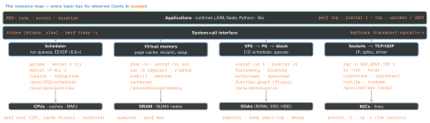
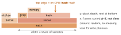

linux · folio
In one line: Start from resources, not guesses: for every resource check Utilization,
Saturation, Errors (USE) with fixed first-minute counters; then profile
(perf samples stacks → flame graph) or trace (eBPF: in-kernel, aggregated,
cheap). Know what each number counts — Linux load includes D-state tasks, wa is
idle time, %util cannot see parallelism, PSI measures stalls directly.
Download PDF Print view LaTeX source


USE — for every resource: Utilization · Saturation · Errors
| U — busy | S — queued work | E — errors | |
|---|---|---|---|
| CPU | mpstat -P ALL: per CPU, not the average | vmstat r > CPUs · PSI cpu · runqlat | CPU error events (cache ECC) |
| memory | used vs available | si/so swapping · sar -B page scans · PSI memory | OOM kills, physical failures in dmesg |
| disk | iostat %util (serial devices only) | aqu-sz · r_await/w_await · PSI io | smartctl, kernel I/O errors |
| network | rx/tx vs link speed (sar -n DEV) | drops, overruns, retransmits, ListenOverflows | ip -s link, sar -n EDEV |
U = % of time busy · S = work it cannot serve yet, usually a queue length · E = a count; errors are the easiest to read — check them first. 100% U is usually a bottleneck, 70%+ often on I/O (a disk cannot preempt low-priority work); any saturation adds latency; 60% over 5 min may be 100% for 3 min, then idle. For request-driven services: RED — Rate, Errors, Duration (T. Wilkie, 2015, inspired by USE).
The first 60 seconds (Netflix Tech Blog, 2015)
uptime | load 1/5/15 min: 1-min > 15-min = still rising |
dmesg | tail | OOM kills, TCP dropping requests, I/O errors |
vmstat 1 | r > CPU count = CPU saturated · b blocked · si so ≠ 0 = out of memory |
mpstat -P ALL 1 | one hot CPU = a single-threaded bottleneck |
pidstat 1 | rolling per-process; %CPU summed over all CPUs |
iostat -xz 1 | r/s w/s, r_await w_await, aqu-sz, %util; -z hides idle disks |
free -m | available, buff/cache, swap used |
sar -n DEV 1 | rxkB/s txkB/s per NIC vs its limit |
sar -n TCP,ETCP 1 | active/s out, passive/s in, retrans/s |
top | cross-check; it clears the screen, so trends hide |
mpstat, pidstat, iostat, sar are sysstat. The first line of vmstat and iostat is the average since boot — read from the second (iostat -y skips it). pidstat -w: cswch/s voluntary (blocked on a resource) vs nvcswch/s involuntary (slice used up: CPU contention); -u %wait = waiting to run; -d iodelay = ticks blocked on block I/O.
Load average — Linux counts more than CPU
/proc/loadavg: 1/5/15-min damped averages of tasks R (runnable) plus D (uninterruptible: disk I/O, some locks), then runnable/total entities and the last PID. D was added by M. Urlichs’s patch of 29 Oct 1993; other Unixes count CPU demand only. Load 16 on 8 idle CPUs can be blocked I/O: compare vmstat r with b, ps state D, or read PSI, which splits cpu, io and memory.
CPU time — iowait is a kind of idle
wa is idle time with a disk I/O outstanding — not reliable: tasks wait, CPUs do not; it vanishes once another task gets that CPU, and can even decrease. High st = a noisy neighbour, not your code. top %CPU is per CPU (Irix mode): 400% = 4 CPUs; I toggles Solaris mode (÷ CPUs).
The past, not only now
sysstat’s collector (sa1, a timer or cron job, every 10 min by default; Debian: set ENABLED="true" in /etc/default/sysstat) writes /var/log/sa/saDD (Debian: /var/log/sysstat/). Replay with sar -f FILE + -u CPU · -q load + PSI · -r memory · -B paging · -d disks · -n DEV,EDEV,TCP,ETCP. Kernel events: journalctl -k (this boot; -b -1 = previous), -p err, -S "-1h".
strace vs perf trace
strace uses ptrace: the tracee stops twice per syscall with a context switch each time — dd ran 442× slower (2014) while strace traced only accept(), which dd never calls. --seccomp-bpf (needs -f, not for -p) makes the kernel stop only on traced syscalls. perf trace is buffered: one dd test ran 2.5× slower under perf, 62× under strace.
perf — count, sample, trace
perf stat -a -- sleep 10 # cycles, instructions -> IPC
perf top -g # live hottest functions
perf record -F 99 -a -g -- sleep 30 # 99 Hz, all CPUs
perf script | stackcollapse-perf.pl | flamegraph.pl > cpu.svg
perf record --off-cpu -p PID # blocked time, via BPF
perf trace -s -p PID # syscall min/avg/max per thread- 99 Hz, not 100: avoids sampling in lockstep with periodic work.
- Stacks:
--call-graph fp(default; needs frame pointers) ·dwarf(copies 8 KiB of user stack per sample) ·lbr(user only). Frame pointers are default in Fedora 38 and Ubuntu 24.04 (64-bit; Canonical: 1–2% cost). - JITs need a symbol map: Node
--perf-basic-prof(-only-functions)→/tmp/perf-PID.map; CPython 3.12+-X perf. - IPC < 1 likely memory-stalled, > 1 instruction-bound — a rule of thumb, calibrate per CPU. %CPU counts stall cycles as busy.
perf_event_paranoiddefault 2: no kernel profiling withoutCAP_PERFMON(Linux 5.8).
Flame graph — how to read it

Released Dec 2011 (FlameGraph: capture → fold → flamegraph.pl; --inverted = icicle). A flame chart (browser devtools) puts time on x. Off-CPU: CPU samples miss blocked time — offcputime (BCC, Linux 4.8+) sums it per stack in the kernel; --state 2 keeps only D-state waits.
eBPF — run in the kernel, return only summaries
The verifier walks every path before load; then JIT to native code; maps (shared with user space) hold counts and histograms, so per-event cost is tiny. Attach to tracepoint (static kernel events: syscalls, sched, block) · kprobe (kernel functions: no stable interface) · uprobe / usdt (user code) · profile:hz:N. CAP_BPF (5.8) splits BPF out of CAP_SYS_ADMIN. BCC compiles with Clang on the target; libbpf-tools use BTF (/sys/kernel/btf/vmlinux) — CO-RE, one binary for many kernels; tools as in the map, plus execsnoop for short-lived processes. bpftrace (0.27):
bpftrace -e 'tracepoint:raw_syscalls:sys_enter { @[comm] = count(); }'
bpftrace -e 'tracepoint:block:block_rq_issue { @ = hist(args.bytes); }'
bpftrace -e 'profile:hz:99 /pid == 1234/ { @[ustack] = count(); }'Without extra tools: ftrace, schedstats
tracefs /sys/kernel/tracing (or /sys/kernel/debug/tracing): current_tracer = function, function_graph (entry + exit), wakeup, irqsoff; set_ftrace_filter narrows, trace_pipe streams. /proc/PID/schedstat: ns on CPU · ns waiting on a run queue · timeslices — scheduler latency per task, no tracer.
PSI — stall time, measured directly (4.20+)
Orange = waiting on the resource. /proc/pressure/{cpu,memory,io}, plus irq (6.1+, needs CONFIG_IRQ_TIME_ACCOUNTING, full line only); per cgroup cpu|memory|io|irq.pressure. Line: some avg10= avg60= avg300= total=μs. System-wide CPU full is undefined, shown as 0 (since 5.13). Triggers: write some 150000 1000000 (150 ms stall per 1 s window), poll() the fd; window 500 ms–10 s. A container slow on an idle host: cpu.stat nr_throttled — its CPU quota, not the CPU.